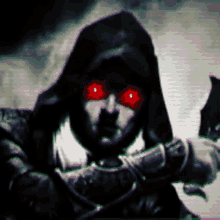

Elfo Negro

Habilidades e Transformações:
- Resistência a Magias: O Elfo Negro possui uma resistência natural a magias, reduzindo o dano de feitiçarias e habilidades mágicas em 30%. (Requer 10 de Inteligência)
- Aura de Sombra: O Elfo Negro emite uma aura sombria ao seu redor, desorientando inimigos próximos e dificultando seus ataques físicos e mágicos. (Requer 8 de Ego, 6 de Inteligência)
- Toque Absorvente: O Elfo Negro pode tocar um inimigo e drenar sua vitalidade, causando dano contínuo e enfraquecendo o adversário. (Requer 7 de Força, 5 de Inteligência)
- Passos Silenciosos: O Elfo Negro se move com extrema agilidade e silêncio, dificultando a detecção por inimigos e permitindo ataques furtivos. (Requer 7 de Velocidade, 5 de Ego)
- Fúria das Sombras: O Elfo Negro invoca uma tempestade de sombras que o envolve, aumentando sua força e velocidade por um tempo limitado e causando dano aos inimigos próximos. (Requer 8 de Força, 6 de Velocidade)
- Reflexos Sombrio: O Elfo Negro pode desviar de ataques com grande agilidade, refletindo uma parte do dano de volta ao inimigo. (Requer 7 de Velocidade, 5 de Ego)
- Véu da Noite: O Elfo Negro se esconde nas sombras, tornando-se invisível por um breve período, perfeito para ataques furtivos ou evasão. (Requer 6 de Velocidade, 6 de Ego)
- Visão das Sombras: O Elfo Negro tem a capacidade de ver claramente na escuridão total, detectando inimigos e objetos ocultos nas sombras. (Requer 5 de Inteligência, 4 de Velocidade)
- Transformação Sombria: O Elfo Negro assume uma forma mais poderosa, coberta por sombras, que aumenta sua força, resistência e velocidade por um curto período de tempo. (Requer 10 de Ego, 8 de Força)
- Garras das Sombras: O Elfo Negro convoca garras feitas de pura sombra que surgem de suas mãos, causando dano significativo aos inimigos e podendo cortar através de materiais sólidos. (Requer 7 de Força, 6 de Velocidade)